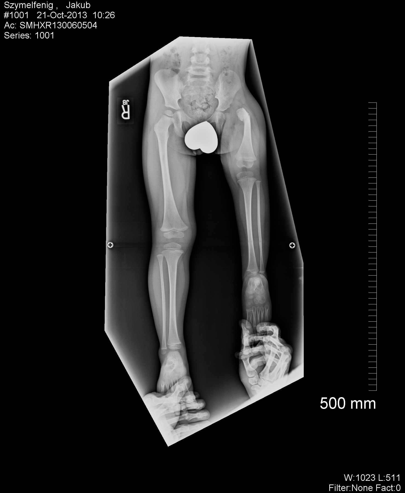
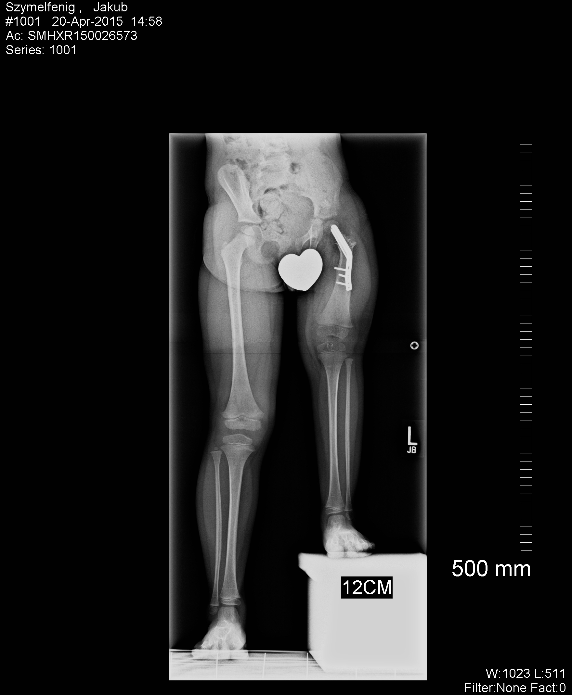

Opis choroby
Co to jest PFFD?
Proximal Femoral Focal Deficiency - to rzadka niedziedziczna wada wrodzona, która atakuje miednicę, a w szczególności stawy biodrowe oraz bliższy im koniec kości udowej. Wada ta objawia się szeregiem różnych zmian takich jak: brak, bądź poważne skrócenie kości udowej ustawionej w rotacji zewnętrznej, brak rzepki w stawie kolanowym, brak kości strzałkowej, skrócenie kości piszczelowej oraz występowanie stopy koślawej bądź jej deformacja. PFFD może dotyczyć jednej kończyny lub obu. Według powszechnie stosowanej klasyfikacji dr. J. D. Aitkiena występują cztery typy PFFD (A, B, C, D). Opracowano je na podstawie prześwietleń rentgenowskich. Zmieniają się one w nasileniu od stopnia łagodnego w przypadku krótkiej kości udowej, ale normalnego stawu biodrowego, do przypadków ciężkich, gdzie brak jest stawu biodrowego.
Bardziej szczegółową klasyfikację przedstawia dr Dror Paley. Jest to ortopeda specjalizujący się w leczeniu PFFD. Jego klasyfikacja bazuje na strukturze zaburzeń w obrębie stawów biodrowego i kolanowego oraz uwzględnia uwarunkowania, które wpływają na rekonstrukcję i wydłużanie krótkiej kości udowej.
Klasyfikacja wg dr. D. Paleya- Typ 1. Nienaruszona kość udowa ze stawem biodrowym i kolanowym:
- normalne skostnienie bliższej części kości udowej,
- opóźnienie kostnienia bliższej części kości udowej.
- Typ 2. Biodro nieukształtowane w pełni:
- głowa kości udowej w panewce,
- głowa kości udowej nieobecna.
- Typ 3. Niedorozwój kości udowej:
- ruch kolana > 45 stopni,
- ruch kolana < 45 stopni.
Stwierdzono, że PFFD powstaje w pierwszym trymestrze ciąży, między 4 a 6 tygodniem, podczas procesu nazwanego morfogenezą. Jeśli wtedy w trakcie podziału i formowania się poszczególnych części płodu nastąpi błąd, wówczas dochodzi do „deformacji”. Czynnikami teratogennymi przyczyniającymi się do powstania PFFD mogą być: niedobór tlenu, krótkotrwałe niedokrwienie, chemikalia, hipotermia, toksyny bakteryjne, infekcje wirusowe, zmiany hormonalne, promieniowanie RTG. Nie określono jednoznacznie, jaki czynnik posiada największy wpływ na pojawienie się PFFD. Pewne jest jednak, że nie jest to wada przekazywana genetycznie. Przeprowadzone dotychczas badania dowodzą, że PFFD nie ma związku z rozwojem innych części ciała oraz narządów (mózgu, serca itp.).
Metody leczenia
Leczenie, w zależności od stanu zniekształcenia, może polegać na zastosowaniu aparatów stabilizujących stawy (ortez), wydłużaniu kończyny stabilizatorem zewnętrznym lub założeniu protezy, co wiąże się z amputacją części nogi.
Wydłużanie kończyny, tzw. „wyciąganie”, odbywa się za pomocą aparatu Ilizarowa albo podobnych aparatów zewnętrznych. Aparaty te składają się z kilku pierścieni albo półpierścieni połączonych ze sobą teleskopowymi prętami. Pierścienie mocowane są do kości kończyny za pomocą drutów Kirschnera. Urządzenia te umożliwiają ustawienie i stabilizację wydłużanych elementów we wszystkich trzech płaszczyznach.
Od 2011 dr Dror Paley rozpoczął stosowanie nowatorskiej technologii - opracowanej przez niego i wspólnie doskonalonej z Ellipse Technologies - wydłużanie kończyn za pomocą pręta śródszpikowego PRECICE. Metoda ta polega na umieszczeniu wewnątrz kości ruchomego metalowego pręta z silnikiem napędzanym polem magnetycznym. Pole to jest aktywowane przez urządzenie przykładane do nogi pacjenta trzy razy na dobę na kilka minut. Dzięki uruchomieniu rozciągania pręta, codziennie noga jest wydłużana o 1 mm. Zabieg ten jest małoinwazyjny, z nogi nie wystają żadne metalowe elementy, co zwiększa komfort pacjenta.
PFFD u Kuby
Według klasyfikacji dr. Drora Paleya schorzenie Kuby jest zaliczane do grupy 1B. Niedorozwój kości udowej objawia się jej wyraźnym skróceniem, znacznym zniekształceniem głowy i szyjki oraz brakiem połączenia między głową kości udowej a jej trzonem. Staw biodrowy wykształcony jest nieprawidłowo i występują zmiany wtórne kości miednicy. Największym problemem jest spowolniony wzrost lewej nóżki w stosunku do prawidłowo rosnącej prawej. Skutkuje to bardzo dużą różnicą w długości obu nóg, która z upływem czasu zwiększa się. Jeżeli nie zostanie zapewnione odpowiednie leczenie różnica ta, gdy Kuba dorośnie, może wynieść nawet 35 cm!!!
|  |  |